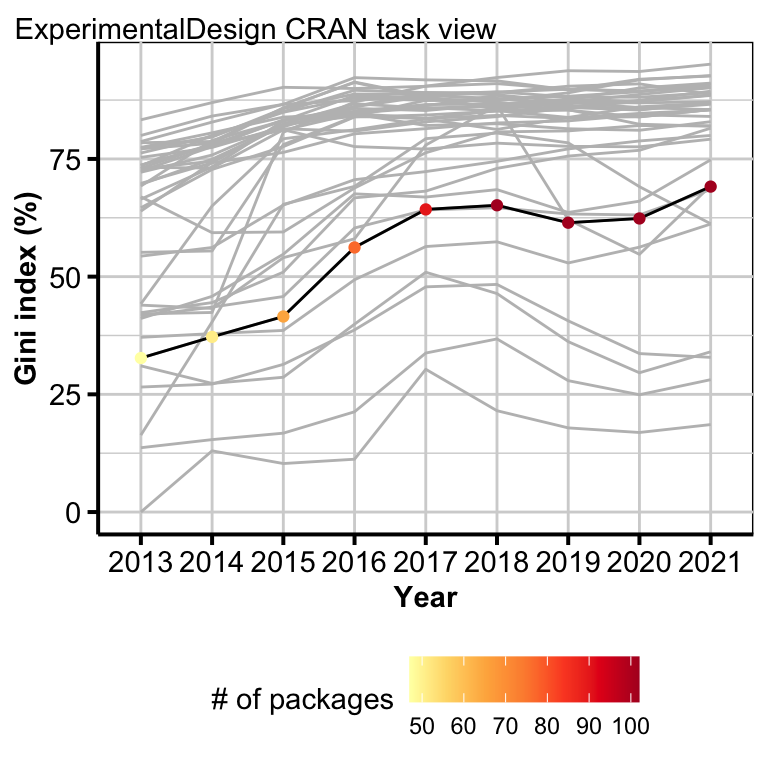

Supplmentary material for “Current status and prospects of R-packages for the design of experiments”
Keywords: experimental design, CRAN task view, user interface.

Figure 0.1: The points show the Gini index of the download counts by year facetted by CRAN task view with the color showing the number of packages. The grey line shows the distribution of the Gini index across years for all other CRAN task views. The facets are ordered by increasing value of the Gini index in 2021.
| Name | Topic | # of packages | Total # of contributors | Average # of contributors | Intra-connectivity (%) |
|---|---|---|---|---|---|
| ExperimentalDesign | Design of Experiments (DoE) & Analysis of Experimental Data | 112 | 211 | 2.27 | 29 |
| SportsAnalytics | Sports Analytics | 78 | 149 | 2.32 | 17 |
| MedicalImaging | Medical Image Analysis | 32 | 53 | 2.44 | 44 |
| MetaAnalysis | Meta-Analysis | 157 | 351 | 2.63 | 43 |
| ChemPhys | Chemometrics and Computational Physics | 75 | 162 | 2.65 | 28 |
| ClinicalTrials | Clinical Trial Design, Monitoring, and Analysis | 59 | 141 | 2.76 | 31 |
| Distributions | Probability Distributions | 257 | 597 | 2.88 | 45 |
| Survival | Survival Analysis | 239 | 558 | 2.92 | 73 |
| ExtremeValue | Extreme Value Analysis | 37 | 89 | 2.95 | 41 |
| Optimization | Optimization and Mathematical Programming | 136 | 328 | 3.04 | 29 |
| TimeSeries | Time Series Analysis | 339 | 793 | 3.04 | 58 |
| OfficialStatistics | Official Statistics & Survey Statistics | 131 | 325 | 3.06 | 40 |
| Hydrology | Hydrological Data and Modeling | 100 | 252 | 3.09 | 24 |
| NumericalMathematics | Numerical Mathematics | 115 | 271 | 3.14 | 63 |
| Databases | Databases with R | 43 | 95 | 3.23 | 77 |
| WebTechnologies | Web Technologies and Services | 201 | 428 | 3.25 | 90 |
| NaturalLanguageProcessing | Natural Language Processing | 56 | 130 | 3.30 | 62 |
| Bayesian | Bayesian Inference | 213 | 621 | 3.35 | 49 |
| FunctionalData | Functional Data Analysis | 40 | 109 | 3.38 | 60 |
| Robust | Robust Statistical Methods | 59 | 136 | 3.41 | 75 |
| Psychometrics | Psychometric Models and Methods | 230 | 567 | 3.41 | 69 |
| Tracking | Processing and Analysis of Tracking Data | 46 | 149 | 3.46 | 48 |
| Cluster | Cluster Analysis & Finite Mixture Models | 108 | 305 | 3.47 | 39 |
| Econometrics | Econometrics | 152 | 363 | 3.50 | 81 |
| Finance | Empirical Finance | 158 | 426 | 3.61 | 57 |
| MissingData | Missing Data | 210 | 740 | 3.99 | 42 |
| SpatioTemporal | Handling and Analyzing Spatio-Temporal Data | 81 | 269 | 4.04 | 70 |
| Spatial | Analysis of Spatial Data | 197 | 618 | 4.26 | 83 |
| GraphicalModels | Graphical Models | 32 | 109 | 4.38 | 78 |
| Pharmacokinetics | Analysis of Pharmacokinetic Data | 29 | 109 | 4.55 | 21 |
| HighPerformanceComputing | High-Performance and Parallel Computing with R | 83 | 315 | 4.75 | 63 |
| DifferentialEquations | Differential Equations | 27 | 114 | 4.96 | 56 |
| Environmetrics | Analysis of Ecological and Environmental Data | 93 | 383 | 5.02 | 74 |
| MachineLearning | Machine Learning & Statistical Learning | 102 | 488 | 5.63 | 50 |
| TeachingStatistics | Teaching Statistics | 46 | 236 | 6.35 | 57 |
| ReproducibleResearch | Reproducible Research | 102 | 524 | 6.49 | 76 |
| ModelDeployment | Model Deployment with R | 31 | 146 | 6.55 | 74 |